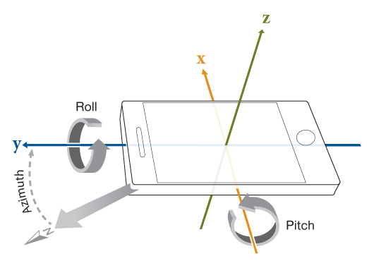
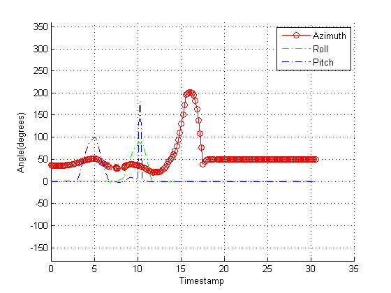

Capturing Azimuth, Pitch, and Roll Example
Contents
Introduction to sensor orientation
This example shows how to capture the orientation of the mobile device. We define the orientation as a combination of three angular quantities: Azimuth, pitch, and roll. The three quantities are defined based on the axes as shown in following image:

As you can see, the positive X-axis extends out of the right side of the phone, positive Y-axis extends out of the top side, and the positive Z-axis extends out of the front face of the phone. This is independent of the orientation of the phone.
Definition of Azimuth, Pitch, and Roll
Azimuth is angle between the positive Y-axis and magnetic north and its range is between 0 and 360 degrees.
Positive Roll is defined when the phone starts by laying flat on a table and the positive Z-axis begins to tilt towards the positive X-axis.
Positive Pitch is defined when the phone starts by laying flat on a table and the positive Z-axis begins to tilt towards the positive Y-axis.
Creation of the object
Azimuth, Pitch, and Roll are currently only available on Android based devices due to limitations of the 3rd party Apps that we support. Therefore, in this example, we will create an object for an Android device.
% Create the object obj = sensorgroup('AndroidMobile') %#ok<NOPTS>
Waiting for data...
To configure your mobile device:
1. Open the SensorUdp app.
2. For dest. host, enter 172.28.152.88, 192.168.228.1, or 192.168.22.1
3. For port, enter 50000
4. Choose one or more sensor.
5. Tap send.
obj =
sensorgroup logging data from Android device on port 50000
Measurements: (showLatestValues)
Acceleration Orientation
Latitude Speed
Longitude
Altitude MagneticField
View of the collected measurements
To view the latest collected measurements, we will call the showLatestValues method.
% Call showLatestValues()
showLatestValues(obj)
Measurement Latest Values Units Log Size ------------- ---------------------------------- ------- -------- Orientation 59.30 -6.02 -43.76 degrees <1x3> Waiting for: Acceleration, MagneticField, Latitude, Longitude, Altitude, and Speed. More information.
Pause, and then call again
pause(0.2) showLatestValues(obj)
Measurement Latest Values Units Log Size ------------- ---------------------------------- ------- -------- Orientation 59.37 -5.92 -43.79 degrees <2x3> Waiting for: Acceleration, MagneticField, Latitude, Longitude, Altitude, and Speed. More information.
Now pause again to collect enough information to have a nice plot
pause(30)
Plot the Azimuth, Roll and Pitch vs. Time
f = figure; hold on ylim([-180 360]); [o, t] = orientlog(obj); plot(t, o(:,1), '-ro', t, o(:,2), '-.g', t, o(:,3), '-.b'); grid on xlabel('Timestamp') ylabel('Angle(degrees)') hleg1 = legend('Azimuth', 'Roll', 'Pitch');
Cleanup
When you are done, the object should be deleted to free up the resources occupied by the object.
delete(obj)